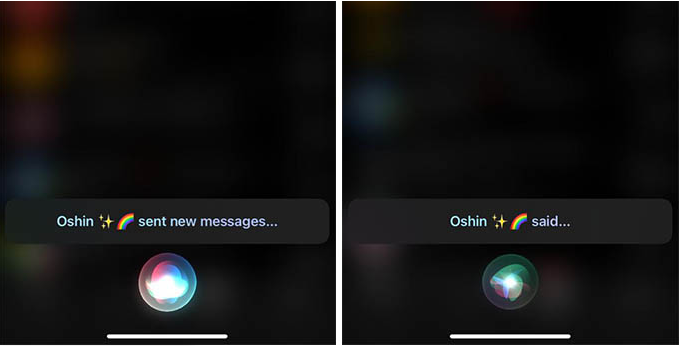
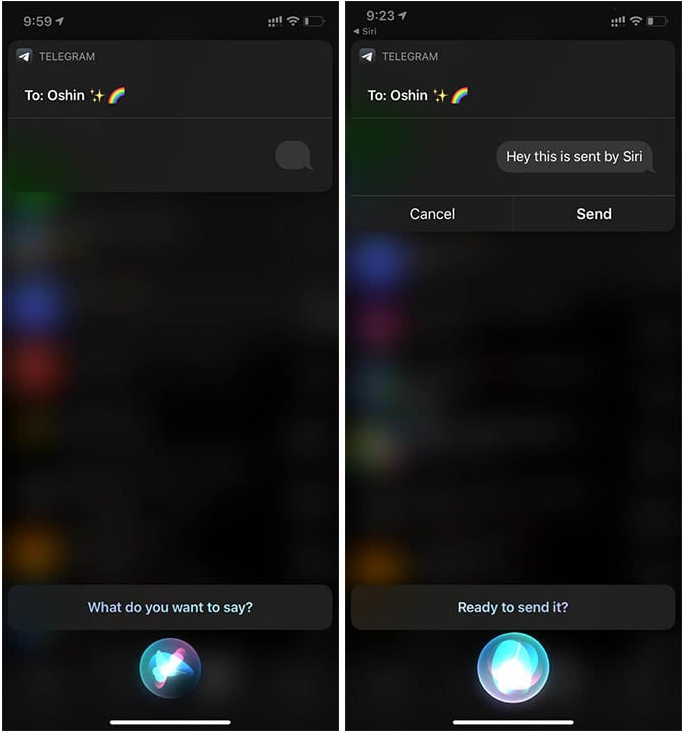

如何在 iPhone 上使用 Siri 阅读和发送 Telegram 消息
无论是在 iPhone 还是 iPad 上，Siri 都是全能助手。它可以从 iMessage 读取和发送消息。此外，如果您不知道的话，Siri 现在也可以发送音频消息。 Telegram 现在在 iPhone 上添加了对 Siri 的支持，幸运的是，您可以使用 Siri 在 Telegram 应用程序上阅读和发送消息。
在本指南中，我们将向您展示如何在 iPhone 和 iPad 上使用 Siri 阅读 Telegram 消息以及在 Telegram 中发送消息。
使用 Siri 阅读/发送 Telegram 消息
就像 Siri 为您做其他事情一样，您也可以简单地要求 Siri 阅读 Telegram 消息。 Siri 可以获取 Telegram 上的最后一条消息并将其读给您听，就像短信或 iMessage 一样。此外，如果您想向某人发送电报消息，您也可以使用 Siri
您所需要做的就是触发 Siri 并要求在 Telegram 上阅读或发送消息。请参阅一些示例 Siri 命令来读取最新消息或在 Telegram 上发送新消息。

嘿 Siri，阅读来自 [联系人姓名] 的电报消息
嘿 Siri，我有电报消息吗？
嘿 Siri，阅读我的电报消息
嘿 Siri，阅读来自 [联系人姓名] 的电报消息
嘿 Siri，向 Telegram 上的 [联系人姓名] 发送消息
嘿 Siri，在 Telegram 上发送消息

您可以使用 Siri 将 Telegram 消息发送到任何聊天或群组。如果您为 Telegram 启用了 FaceID 或 TouchID，则需要先手动打开 Telegram 应用程序，然后再要求 Siri 阅读或发送消息。除此之外，Siri 命令运行良好且快速，可以帮助您向朋友发送短信，甚至无需触摸屏幕。
上面的所有命令都可以正常工作，并且可以使用 Siri 在 Telegram 上阅读和发送消息。 Telegram 将继续通过 Siri 添加更多操作，我们将在它们到达时进行更新。